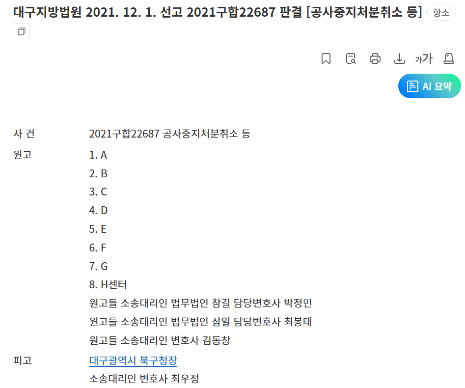
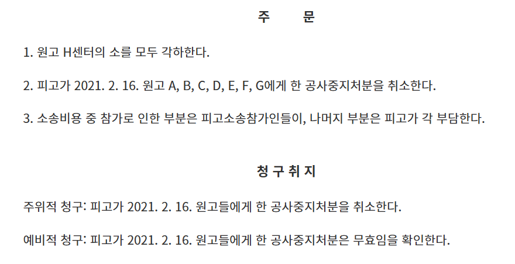
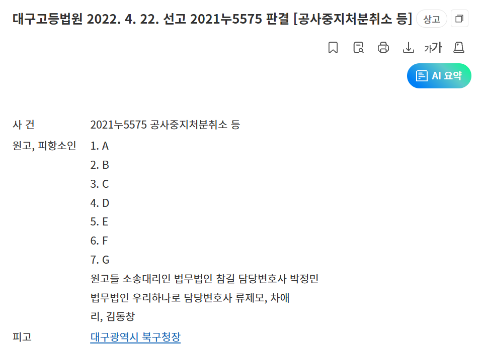
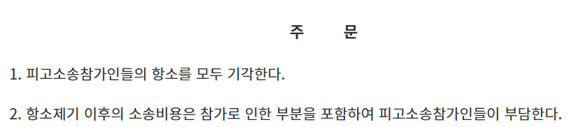
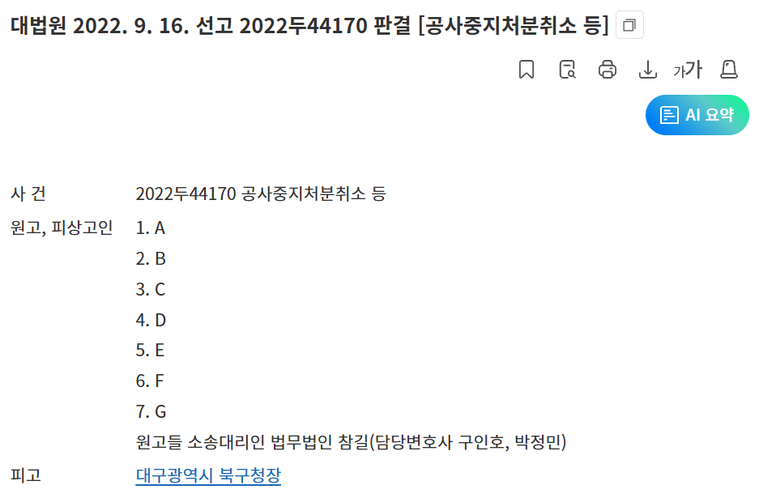
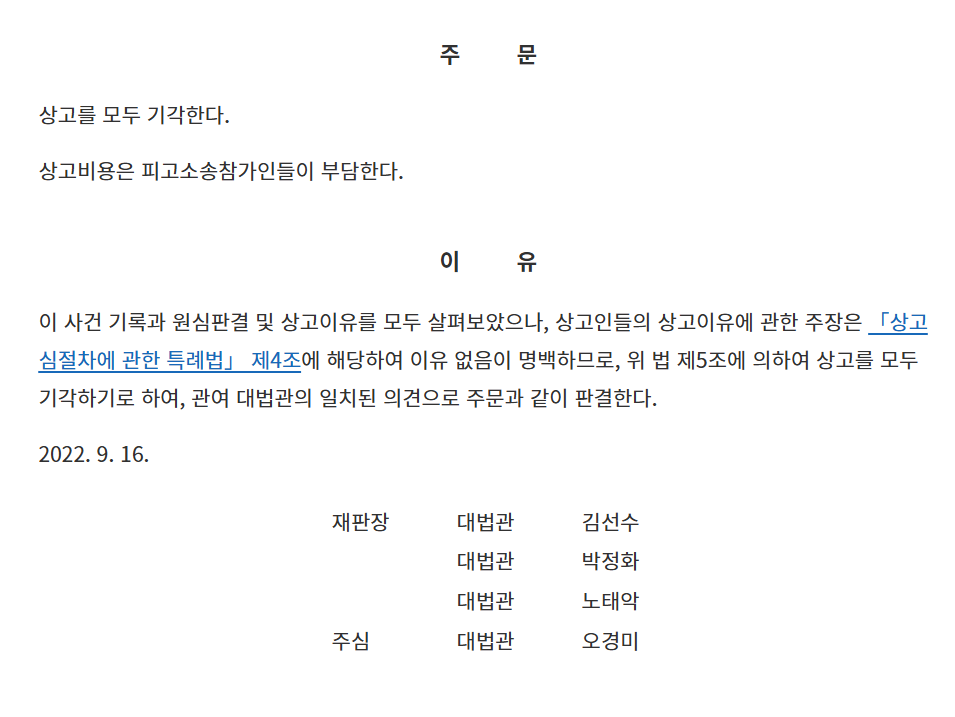
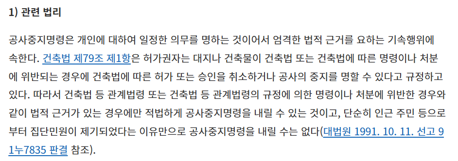

왜긴 왜야
입법부가 법률제정을 안 해서 행정청이 행정소송에서 패소했기 때문이지

관련 대법원 법리를 보면 1991년임
입법부에게 법률을 만들어서 대비할 수 있는 기간이 무려 30년(1991년~2021년)이나 있었는데
입법부가 30년동안 손놓고 법률 제정을 안 하니 사법부는 당연히 원고 승소 판결 내릴 수 밖에 없고
행정청은 소송에서 패소했으니 당연히 못 막지
이건 입법부 탓이지 행정부, 사법부에서 뭘 할 수 있는게 없음
입법부가 일을 존나 안 함 ㅋㅋㅋ
그런데 세계에서 법안은 가장 많이 냄
븅신같은 ㅋㅋㅋ